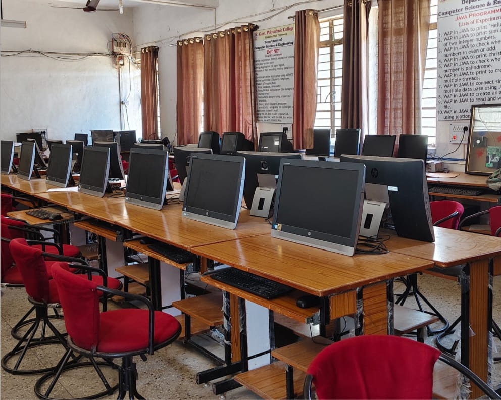
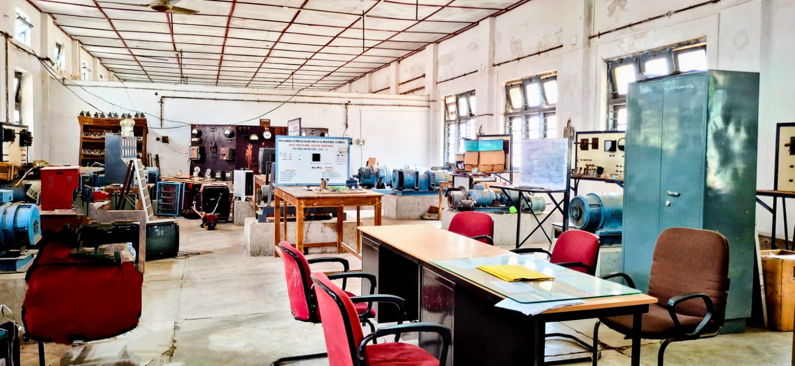

Our Campus Facilities:
Library -
Well-stocked library with books, journals, and digital resources for all departments.
Students have access to subject-specific books, newspapers, magazines, and e-resources to support their learning.
Our college library is a well-equipped knowledge center, offering a wide collection of textbooks, reference books, journals, and digital resources.
Computer Labs -
Modern labs with high-speed internet and updated software for practical learning.
Students receive hands-on training in programming, web development, database management, and various IT applications.
The labs are connected with high-speed internet and network facilities, enabling smooth access to online learning resources and tools.


Workshops -
It provides students with real-world experience in fitting, welding, carpentry, machining, and other core engineering skills.
The workshop helps bridge the gap between theoretical knowledge and practical application through guided practice and live demonstrations.
Dedicated mechanical, electrical, and civil engineering workshops for hands-on training.Safety measures and proper supervision are ensured to maintain a secure and effective learning environment.



Sports Ground -
Playgrounds and indoor games facilities for physical and recreational activities.
The college sports ground provides ample space and facilities for outdoor games such as cricket, football, volleyball, and athletics.
We believe in the overall development of students, and sports play a key role in promoting physical fitness, teamwork, and discipline.